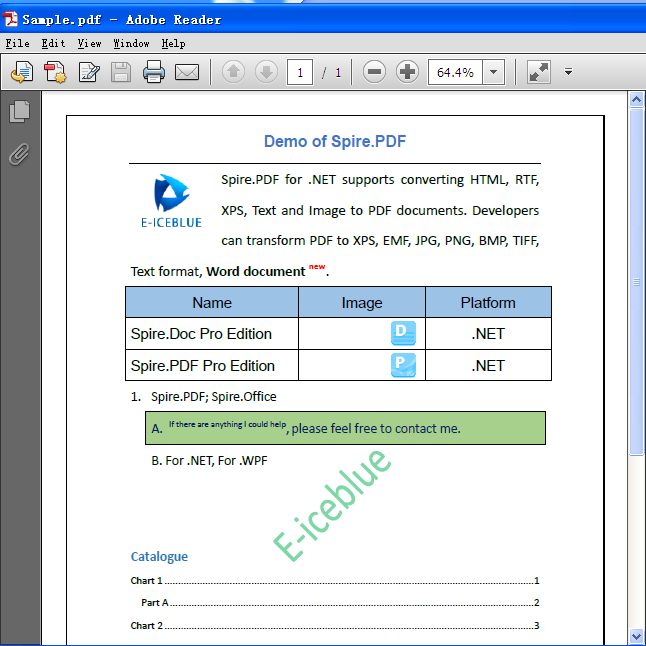

How to convert PDF to Word document in C# and VB.NET
Introduction
This sample is mainly talk about how to convert PDF to DOC in C# by using Spire.PDF.
As a standalone C#/VB.NET component, Free Spire.PDF for .NET enables developers to create, write, edit, convert, print, handle and read PDF files on any .NET applications. You can implement rich capabilities to create PDF files from scratch or process existing PDF documents.
Spire.PDF contains powerful .NET PDF API that support numerous functions, such as: security setting (including digital signature), PDF text/attachment/image extract, PDF merge/split, metadata update, section and paragraph optimizing, graph/image drawing and inserting, table creation and processing, and importing data etc. Besides, Spire.PDF for .Net can be used to convert Text, Image, XPS and HTML to high quality PDF through C# or VB.Net. Finally, PDF can be converted to .doc document in C# and VB.NET.
There a lot of PDF tasks can be operated by using this .NET PDF library. Programmers can merge PDF files into one PDF as well as split a huge PDF with the given number range accordingly. Furthermore, it can protect your PDF document by encryption with both owner password and user password, create PDF digital signature. If you do not need to lock your PDF, you can decrypt it quickly. Besides, you can set PDF property, PDF template and view preference as you like.
Effective screenshots of the original PDF and the result word document:

Result word document:

Useful Links:
Website: http://www.e-icbelue.com
Product Home: Spire.PDF for .NET introduction
Free Trial: Free evalution on Spire.PDF
Forum: Spire.PDF Forums